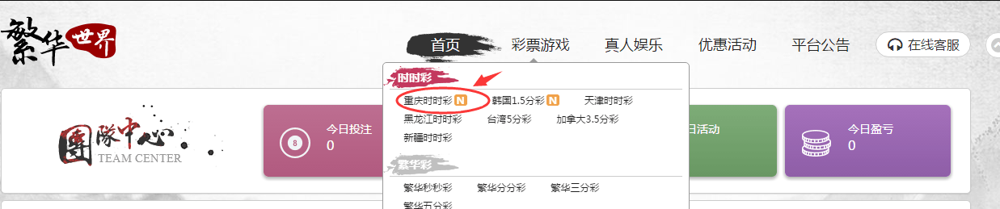
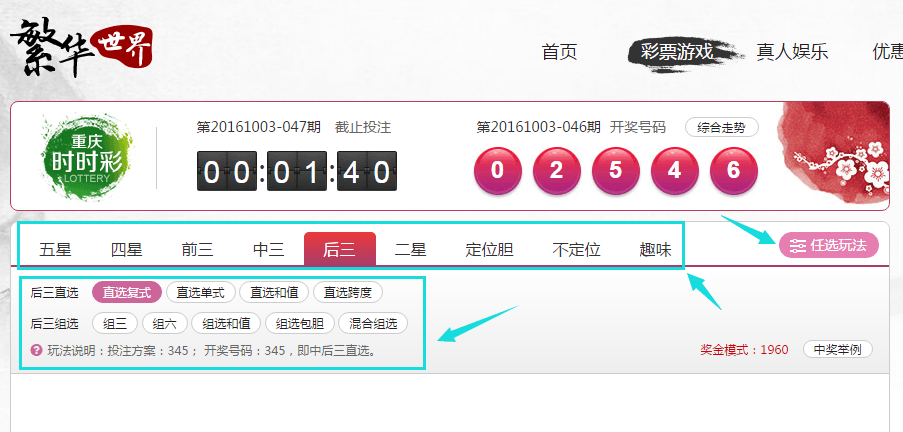
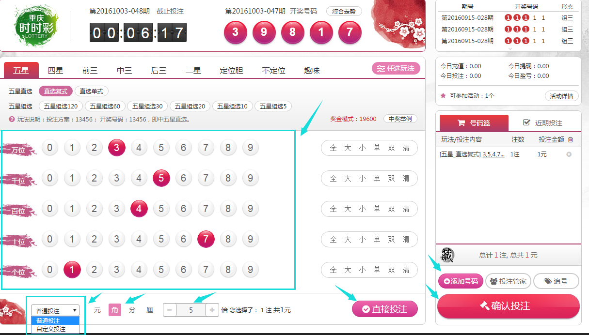
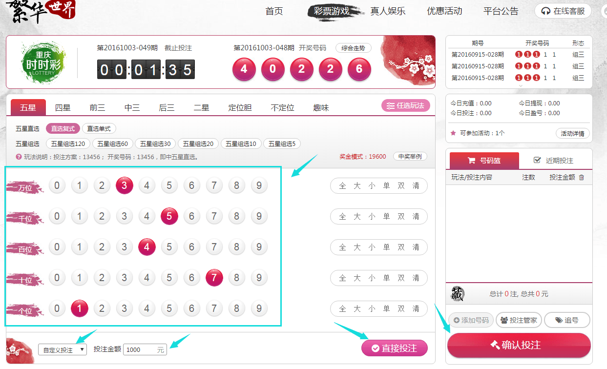
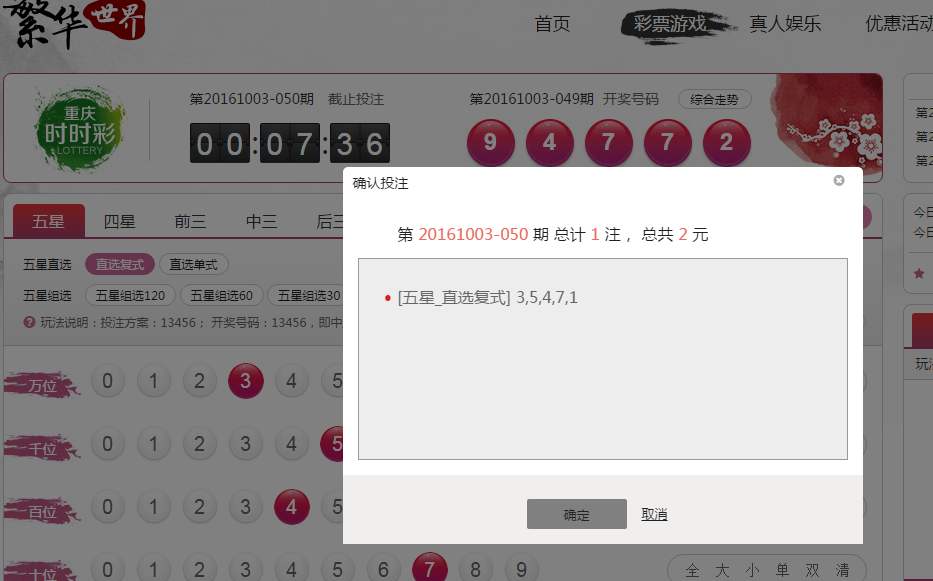
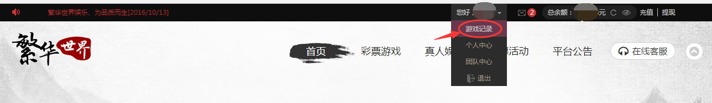
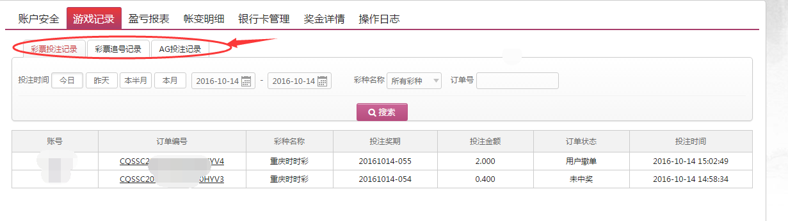

如您需要注册账号，请在“百度”搜索 “繁华娱乐”，点击相关链接，您可以得到相关的注册信息，获得自己的繁华账号。
1、进入平台后，把鼠标移动到导航栏的“彩票游戏”选项，会自动下拉出一系列彩种，点击选择您想玩的彩种，比如：重庆时时彩。

2、进入彩种投注页面后，首先选择任选玩法或常规玩法,再选择玩法群（五星、四星、前三、中三、后三、二星、定位胆、不定位或趣味玩法），然后选择相应的玩法组（如：直选复式、直选单式、组三、混合组选，等等）

3、选择号码进行投注，然后选择投注模式（普通投注或自定义投注）。 如果选择“普通投注”，则继续选择“元角分”模式，再输入投注倍数，之后点击“直接投注”或“添加号码”—“确认投注”；

如果选择“自定义投注”，则输入需要投注的金额，例如1000元，之后点击“直接投注”或“添加号码”—“确认投注”。

页面跳出“确认投注”，请仔细核对您的投注信息，如果确认无误，点击“确定”，则投注成功。

将鼠标指向导航栏的账户名位置 ，会自动下拉出一列子菜单，点击选择“游戏记录”就能查询到您想要查询的历史记录。如您需要注册账号，请在“百度”搜索 “繁华娱乐”，点击相关链接，您可以得到相关的注册信息，获得自己的繁华账号。

进入游戏记录，您可以看到有彩票投注记录、彩票追号记录、AG投注记录等菜单项，点击您想要查询的项目菜单，即可以查找到相应的历史记录报表。
